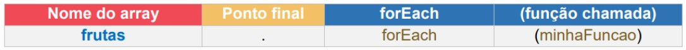

Método ForEach
O método forEach() executa uma determinada função para cada um dos elementos de um array. Ele não é executado em elementos vazios do array. A sintaxe do método é:

Método map()
O método map() cria um novo array com o resultado gerado pela chamada de uma função para cada elemento do array. Ele não é executado em elementos vazios do array. A sintaxe do método é:

Os parâmetros entre colchetes são opcionais e cada um significa: callback: é a função que o retorno produz o elemento do novo Array.
Método filter
O método filter() cria um novo array com o resultado do filtro aplicado pelo método, ou seja, os elementos que “passaram” na condição configurada no filtro. A sintaxe do método é: